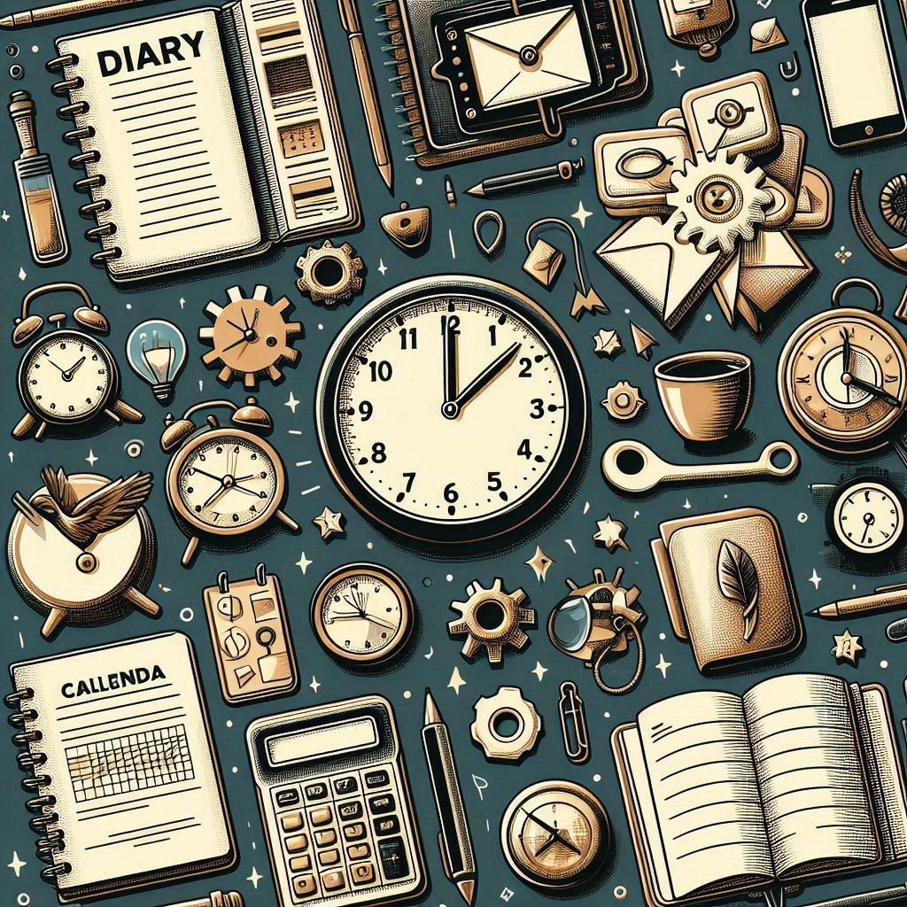
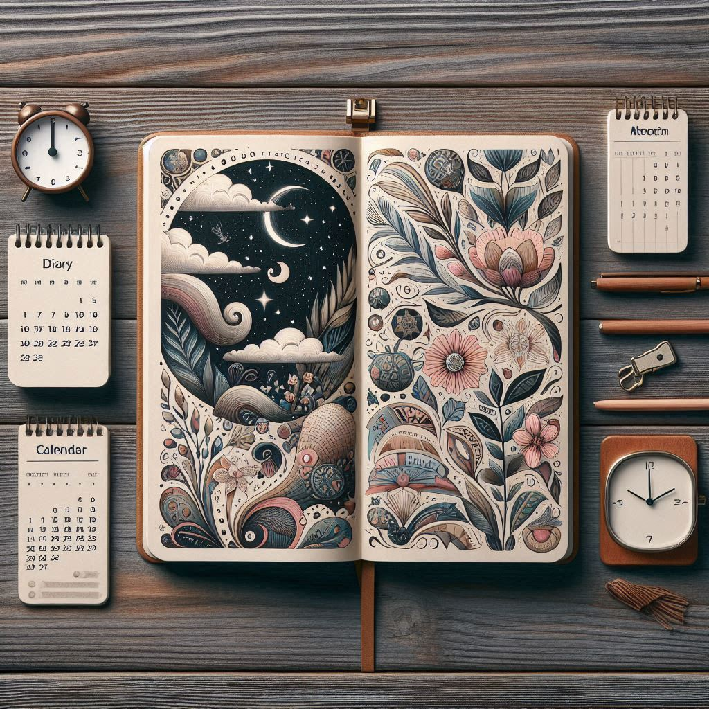
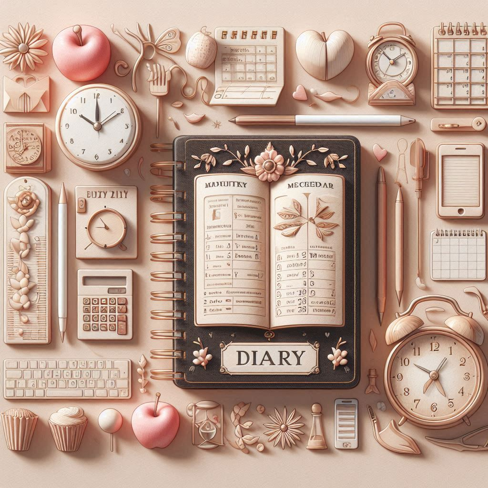

Welcome to Ediary
Your personal diary, to-do list manager, and meeting planner - all in one secure and easy-to-use platform. Ediary not only helps you organize your daily tasks but also allows you to jot down thoughts, plan meetings, and stay on top of your schedule effortlessly. With features like customizable diary covers, real-time synchronization across devices, and intuitive interface, Ediary ensures that managing your personal and professional life is both efficient and enjoyable. Join thousands of users who have chosen Ediary for its reliability, flexibility, and seamless integration into their daily routines.

Keep a Diary to make daily journals.

Manage your tasks with the To-Do list.

Plan your meetings effortlessly.
Customize your diary covers.